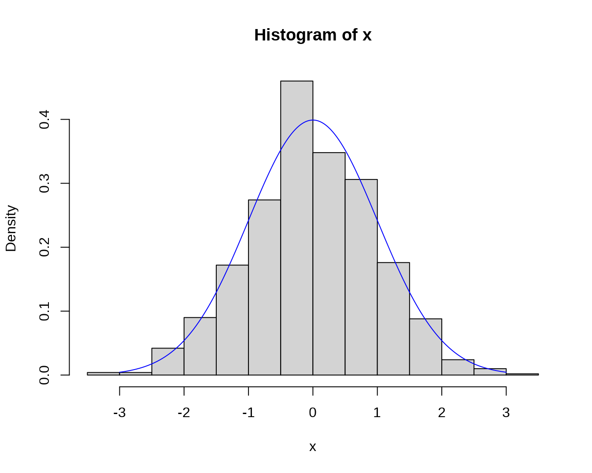

第 3 章 概率论和数理统计
http://staff.ustc.edu.cn/~zwp/teach/Prob-Stat/probstat.htm
# install.packages("TeachingDemos")
library("TeachingDemos")3.1 掷骰子
dice(10, ndice=2, plot.it=T)3.1.1 Efron’s dice
see: http://mathworld.wolfram.com/EfronsDice.html。
ed <- list( rep( c(4,0), c(4,2) ),
rep(3,6), rep( c(6,2), c(2,4) ),
rep( c(5,1), c(3,3) ) )
tmp <- dice( 10000, ndice=4 )
dice(10,ndice=4,plot.it=T)## [1] 0.6666
mean(ed.out[,2] > ed.out[,3])## [1] 0.6663
mean(ed.out[,3] > ed.out[,4])## [1] 0.6663
mean(ed.out[,4] > ed.out[,1])## [1] 0.66033.2 Buffon’s needle
See: https://yihui.org/animation/example/buffon-needle/
oopt = ani.options(nmax = 5, interval = 0)
opar = par(mar = c(3, 2.5, 0.5, 0.2), pch = 20, mgp = c(1.5, 0.5, 0))
buffon.needle()3.3 sample() - sampling from a finite set
# sample(x, size, replace = FALSE, prob = NULL)
# Lotto genrator (sampling from 1:39 without replacement)
sample(39, 7) # or: sample(1:39, 7)## [1] 33 39 13 37 27 12 20## [,1] [,2] [,3] [,4] [,5] [,6] [,7] [,8] [,9] [,10]
## [1,] 36 17 18 15 31 38 34 34 29 26
## [2,] 14 23 35 12 2 9 32 35 23 28
## [3,] 13 11 2 22 18 1 25 39 34 24
## [ reached getOption("max.print") -- omitted 4 rows ]
# Use the argument prob, if you need to specify different
# probabilities for the different outcomes.
# Sometimes we want sampling with replacement; this is the
# same as drawing an i.i.d. sequence of values from the
# corresponding discrete distribution.
# Simulate dice throws
fair.die <- sample(1:6, 100, replace = TRUE)
table(fair.die)## fair.die
## 1 2 3 4 5 6
## 22 18 12 17 16 15Simulate dice throws with a loaded die.
## loaded.die
## 1 2 3 4 5 6
## 18 13 13 22 8 263.4 Discrete random variables and their distributions
- Binomial
dbinom(x=2,size=20,prob=0.5)## [1] 0.0001811981
pbinom(q=2,size=20,prob=0.5)## [1] 0.0002012253
qbinom(p=0.4,size=20,prob=0.5)## [1] 9
rbinom(n=5,size=20,prob=0.5)## [1] 5 13 10 10 12- The Hypergeometric Distribution
dhyper(x=2, m=10, n=30, k=6)## [1] 0.3212879
phyper(q=2, m=10, n=30, k=6)## [1] 0.8472481
qhyper(0.3, m=10, n=30, k=6)## [1] 1
rhyper(nn=10, m=10, n=30, k=6)## [1] 2 0 3 1 2 3 0 3 3 2- The Geometric Distribution,let X count the number of failures before the first successes
dgeom(4,prob=0.8)## [1] 0.00128
pgeom(4, prob = 0.8)## [1] 0.99968
qgeom(0.4,prob=0.8)## [1] 0
rgeom(10,prob=0.8)## [1] 0 0 2 0 0 0 0 0 0 0- The Negative Binomial Distribution, let X count the number of failures before r successes
dnbinom(x=5,size=3,prob=0.4) ## [1] 0.1045094
pnbinom(5,size=3,prob=0.4)## [1] 0.6846054
qnbinom(0.5,size=3,prob=0.4)## [1] 4
rnbinom(n=10,size=3,prob=0.4)## [1] 2 7 11 5 3 5 8 7 5 2
- Poisson distributino
dpois(x=0,lambda=2.4)## [1] 0.09071795
ppois(q=10,lambda=2.4)## [1] 0.999957
qpois(p=0.9,lambda=2.4)## [1] 4
rpois(n=10,lambda=2.4)## [1] 4 3 2 3 1 0 1 0 2 2
x <- 0:20
plot(x, ppois(x, 1), type="s", lty=1,ylab="F(x)", main="Poisson approx of binomial")
lines(x, pbinom(x, 100, 0.01),type="s",col=2,lty=2)
legend("bottomright",legend=c("Poisson","Binomial"),lty=1:2,col=1:2)- Poisson and normal approximation of binomial probabilities, with estimated parameters
#P(X<=k)=pbinom(k,n,p)
#Poisson approximation: P(X<=k) app ppois(k,np)
#Normal approximation: P(X<=k) app pnorm(k,np,npq)
apprx <- function(n, p, R = 1000, k = 6) {
trueval <- pbinom(k, n, p) # true binomial probability
prob.zcc <- prob.zncc <- prob.pois <- NULL
q<-1-p
for (i in 1:R) {
x <- rnorm(n, n * p, sqrt(n * p * q))
z.cc <- ((k + .5) - mean(x))/sd(x) # with cont. correction
prob.zcc[i] <- pnorm(z.cc)
z.ncc <- (k - mean(x))/sd(x) # no cont. correction
prob.zncc[i] <- pnorm(z.ncc)
y <- rpois(n, n * p)
prob.pois[i] <- length(y[y <= k])/n
}
list(prob.zcc = prob.zcc, prob.zncc = prob.zncc,
prob.pois = prob.pois, trueval = trueval)
}
R <- 1000
set.seed(10)
out <- apprx(n = 200, p = .03, k = 6, R = 1000)
# windows(6,5)
plot(1:R, out$prob.pois, type = "l", col = "green", xlab = "Runs",
main = expression(paste("Simulated Probabilities: ",
n==200, ", ", p==0.03, sep="")),
ylab = "Probability", ylim = c(.3, .7))
abline(h = out$trueval, col="red", lty=2)
lines(1:R, out$prob.zcc, lty = 1, col = "purple")
lines(1:R, out$prob.zncc, lty = 1, col = "orange")
legend("bottomleft", c("Poisson", "Normal (with cc)",
"Normal (w/o cc)"),
lty = c(1), col = c("green", "purple", "orange"))
set.seed(10)
out <- apprx(n = 200, p = .03, k = 6, R = 1000)
# windows(6,5)
boxplot(out$prob.pois, boxwex = 0.25, at = 1:1 - .25,
col = "green",
main = expression(paste("Approximating Binomial Probability: ",
n==200, ", ", p==0.03, sep="")),
ylab = "Probablity",
ylim = c(out$trueval - 0.2, out$trueval + 0.25))
boxplot(out$prob.zcc, boxwex = 0.25, at = 1:1 + 0, add = T,
col = "purple")
boxplot(out$prob.zncc, boxwex = 0.25, at = 1:1 + 0.25, add = T,
col = "orange" )
abline(h = out$trueval, col = "red", lty=2)
legend("topleft", c("Poisson", "Normal (with cc)", "Normal (w/o cc)"),
fill = c("green", "purple", "orange"))
## Random variables and their distribution
- Binomial
dbinom(x=2,size=10,prob=0.4)## [1] 0.1209324
pbinom(q=2,size=10,prob=0.4)## [1] 0.1672898
qbinom(p=0.4,size=10,prob=0.4)## [1] 4
rbinom(n=5,size=10,prob=0.4)## [1] 3 5 2 1 4- The Hypergeometric Distribution
dhyper(x=2, m=10, n=30, k=6)## [1] 0.3212879
phyper(q=2, m=10, n=30, k=6)## [1] 0.8472481
qhyper(0.3, m=10, n=30, k=6)## [1] 1
rhyper(nn=10, m=10, n=30, k=6)## [1] 4 1 1 1 2 2 1 1 3 2- The Geometric Distribution,let X count the number of failures before the first successes
dgeom(4,prob=0.8)## [1] 0.00128
pgeom(4, prob = 0.8)## [1] 0.99968
qgeom(0.4,prob=0.8)## [1] 0
rgeom(10,prob=0.8)## [1] 0 1 0 0 0 1 0 0 1 04.The Negative Binomial Distribution, let X count the number of failures before r successes
dnbinom(x=5,size=3,prob=0.4) ## [1] 0.1045094
pnbinom(5,size=3,prob=0.4)## [1] 0.6846054
qnbinom(0.5,size=3,prob=0.4)## [1] 4
rnbinom(n=10,size=3,prob=0.4)## [1] 2 5 1 1 11 4 2 1 7 14- Poisson distributino
dpois(x=0,lambda=2.4)## [1] 0.09071795
ppois(q=10,lambda=2.4)## [1] 0.999957
qpois(p=0.9,lambda=2.4)## [1] 4
rpois(n=10,lambda=2.4)## [1] 2 4 4 6 0 3 3 2 2 1
par(mfrow = c(2, 1))
x <- seq(-0.01, 5, 0.01)
plot(x, ppois(x, 1), type="s", ylab="F(x)", main="Poisson(1) CDF")
plot(x, pbinom(x, 100, 0.01),type="s", ylab="F(x)",main="Binomial(100, 0.01) CDF")- Normal distribution
dnorm(0,mean=0,sd=1)## [1] 0.3989423
pnorm(0)## [1] 0.5
qnorm(2.5/100,lower.tail=F)## [1] 1.959964
rnorm(10,mean=1,sd=1.5)## [1] 0.9136374 0.5886706 -1.1184606 -0.7624067 2.5011198 2.6856772
## [7] 3.0430825 0.6944923 1.5424163 1.6967752some plots
x <- seq(-4, 4, length = 401)
plot(x, dnorm(x), type = 'l') # N(0, 1)
# N(1, 1.5^2):
lines(x, dnorm(x, mean = 1, sd = 1.5), lty = 'dashed')
u <- seq(0, 1, length=401)
plot(u, qnorm(u), 'l')
# lower.tail = FALSE gives q(1-u)
lines(u, qnorm(u, lower.tail = FALSE), lty = 'dashed')## $breaks
## [1] -3.5 -3.0 -2.5 -2.0 -1.5 -1.0 -0.5 0.0 0.5 1.0 1.5 2.0 2.5 3.0 3.5
##
## $counts
## [1] 2 2 21 45 86 137 230 174 153 88 44 12 5 1
##
## $density
## [1] 0.004 0.004 0.042 0.090 0.172 0.274 0.460 0.348 0.306 0.176 0.088 0.024
## [13] 0.010 0.002
##
## $mids
## [1] -3.25 -2.75 -2.25 -1.75 -1.25 -0.75 -0.25 0.25 0.75 1.25 1.75 2.25
## [13] 2.75 3.25
##
## $xname
## [1] "x"
##
## $equidist
## [1] TRUE
##
## attr(,"class")
## [1] "histogram"
- exponential distribution
## [1] 0.0000000 0.6467677 0.2709752 0.6514087 0.4451820 0.0000000 0.0000000
## [8] 0.3937035 0.0000000 0.0000000 0.0000000 0.8142085 0.2947052 0.7195265
## [15] 0.4658846 0.5511078 0.0000000 0.9246197 0.6969978 0.0000000 0.0000000
## [22] 0.0000000 0.0000000 0.0000000 0.0000000 0.0000000 0.0000000 0.0000000
## [29] 0.1963103 0.0000000
## [ reached getOption("max.print") -- omitted 970 entries ]
pexp(q, rate = 1, lower.tail = TRUE, log.p = FALSE)## [1] 0.18126925 0.39346934 0.09516258 0.09516258 0.09516258
qexp(p, rate = 1, lower.tail = TRUE, log.p = FALSE)## [1] 0.6931472
rexp(n, rate = 1)## [1] 0.005536359 0.207342347 0.599133480 1.170997404 0.290882872 0.177673159
## [7] 1.246424135 0.175841576 0.041281463 0.885665916 0.018615517 0.615877023
## [13] 1.534591656 3.264871947 1.153509116 0.796585224 1.705156151 0.473271821
## [19] 1.314082502 1.282413484 2.387044230 2.386808468 0.748855574 0.488763332
## [25] 1.389614921 1.573671862 0.485501722 1.378829610 0.805851386 0.522162373
## [ reached getOption("max.print") -- omitted 970 entries ]- Uniform distribution
dunif(x, min=0, max=1, log = FALSE)## [1] 0 1 0 1 1 0 0 1 0 0 0 1 0 1 1 1 0 1 1 0 0 0 0 0 0 0 0 0 0 0
## [ reached getOption("max.print") -- omitted 970 entries ]
punif(q, min=0, max=1, lower.tail = TRUE, log.p = FALSE)## [1] 0.2 0.5 0.1 0.1 0.1
qunif(p, min=0, max=1, lower.tail = TRUE, log.p = FALSE)## [1] 0.5
runif(n, min=0, max=1)## [1] 0.77693961 0.15614217 0.33720060 0.79972727 0.10672545 0.62887067
## [7] 0.17407200 0.23192336 0.08219918 0.35697951 0.07556067 0.39823420
## [13] 0.27835237 0.63720385 0.84284525 0.18321810 0.14768553 0.21428431
## [19] 0.87226437 0.89715272 0.63679677 0.49365256 0.75080120 0.06441163
## [25] 0.71274235 0.78788034 0.58013062 0.52959147 0.58936567 0.84903366
## [ reached getOption("max.print") -- omitted 970 entries ]- other distribution
3.5 exponential distribution
#cumulative distribution function
curve(pexp(x,rate=0.5), xlim=c(0,10), col=1, lwd=3,
main='Exponential Probability Distribution Function')
curve(pexp(x,rate=1), xlim=c(0,10), col=2, lwd=2, lty=2,
add=T)
curve(pexp(x,rate=5), xlim=c(0,10), col=3, lwd=2, lty=3,
add=T)
curve(pexp(x,rate=10), xlim=c(0,10), col=4, lwd=2, lty=4,
add=T)
legend(par('usr')[2], par('usr')[4], xjust=1,
c('rate=0.5','rate=1', 'rate=2','rate=10'),
lwd=2, lty=c(1,2,3,4),
col=1:4)
#density
curve(dexp(x,rate=0.5), xlim=c(0,10), col=1, lwd=3,
main='Exponential Probability Distribution Function')
curve(dexp(x,rate=1), xlim=c(0,10), col=2, lwd=2, lty=2,
add=T)
curve(dexp(x,rate=5), xlim=c(0,10), col=3, lwd=2, lty=3,
add=T)
curve(dexp(x,rate=10), xlim=c(0,10), col=4, lwd=2, lty=4,
add=T)
legend(par('usr')[2], par('usr')[4], xjust=1,
c('rate=0.5','rate=1', 'rate=2','rate=10'),
lwd=2, lty=1:4,
col=1:4)
###normal
#cumulative distribution function
curve(pnorm(x), xlim=c(-5,5), col='red', lwd=3)
title(main='Cumulative gaussian distribution function')
curve(pnorm(x,1,1), xlim=c(-5,5), col='green', lwd=3,add=T)
curve(pnorm(x,1,2), xlim=c(-5,5), col='black', lwd=3,add=T)
legend(-par('usr')[2], par('usr')[4], xjust=-0.5,
c('standard norm', 'normal(1,1)','normal(1,2)'),
lwd=2, col=c('red','green','black'))
#density
curve(dnorm(x), xlim=c(-5,5), col='red', lwd=3)
curve(dnorm(x,1,1), add=T, col='green', lty=2, lwd=3)
curve(dnorm(x,1,2), add=T, col='black', lty=3, lwd=3)
legend(par('usr')[2], par('usr')[4], xjust=1,
c('standard normal', 'normal(1,1)','normal(1,2)'),
lwd=2, lty=c(1,2,3),
col=c('red','green','black'))
###mixture of normal
m <- c(-2,0,2) # Means
p <- c(.3,.4,.3) # Probabilities
s <- c(1, 1, 1) # Standard deviations
curve( p[2]*dnorm(x, mean=m[2], sd=s[2]),
col = "green", lwd = 3,
xlim = c(-5,5),ylim=c(0,0.23),
main = "The three gaussian distributions in our mixture",
xlab = "", ylab = "")
curve( p[1]*dnorm(x, mean=m[1], sd=s[1]),
col="red", lwd=3, add=TRUE)
curve( p[3]*dnorm(x, mean=m[3], sd=s[3]),
col="blue", lwd=3, add=TRUE)
curve(p[1]*dnorm(x, mean=m[1], sd=s[1])+p[2]*dnorm(x, mean=m[2], sd=s[2])+p[3]*dnorm(x, mean=m[3], sd=s[3]),col="black", lwd=3, add=TRUE)http://personal.kenyon.edu/hartlaub/MellonProject/Bivariate2.html
### bivariate normal density with matlab
###Plot of mixtures of bivariate normal with R
# install.packages("rgl")
library(rgl)
dnorm2d<-function(x,y,mu1,mu2,sigma1,sigma2,rho){
xoy = ((x-mu1)^2/sigma1^2 - 2*rho * (x-mu1)/sigma1 * (y-mu2)/sigma2 + (y-mu2)^2/sigma2^2)/(2 * (1 - rho^2))
density = exp(-xoy)/(2 * pi *sigma1*sigma2*sqrt(1 - rho^2))
density
}
x<-seq(-5,5,by=0.1)
y<-seq(-5,5,by=0.1)
ff1<-function(x,y){0.5*dnorm2d(x,y,0,0,1,1,0)+0.5*dnorm2d(x,y,0,0,1,1,0.5)}
ff2<-function(x,y){0.5*dnorm2d(x,y,0,0,1,1,0.5)+0.5*dnorm2d(x,y,0,0,1,1,-0.5)}
ff3<-function(x,y){0.3*dnorm2d(x,y,0,0,1,1,0)+0.7*dnorm2d(x,y,2.5,2.5,1.75,1.75,0)}
open3d() # This will open a small window where you can plot 3D figures on.
z<-outer(x,y,ff1)
persp3d(x,y,z,col="green",main="ff1")
open3d()
z<-outer(x,y,ff2)
persp3d(x,y,z,col="green",main="ff2")
open3d()
z<-outer(x,y,ff3)
persp3d(x,y,z,col="green",main="ff3")